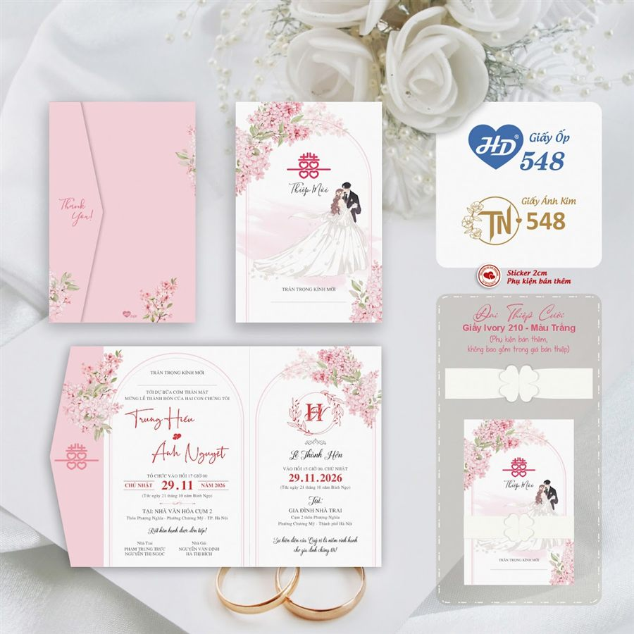
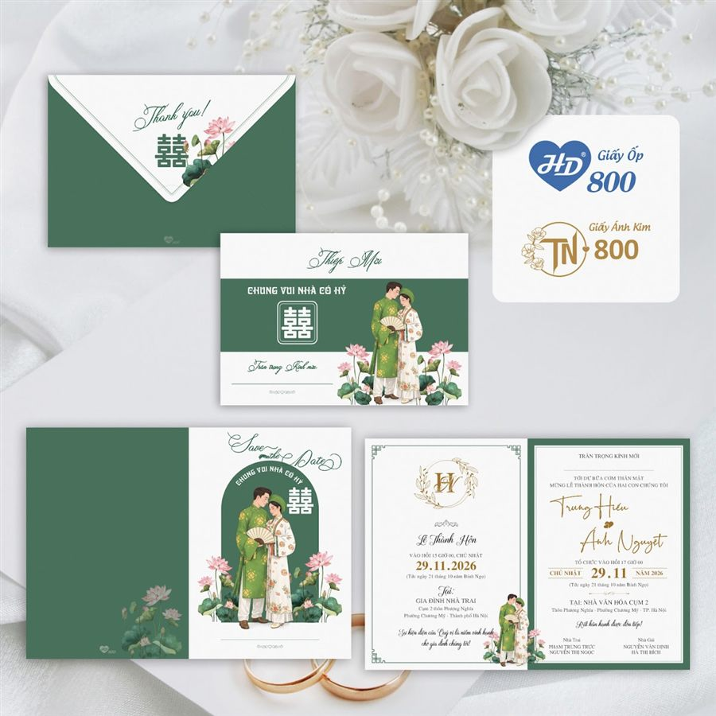

Thiệp cưới online Minh Đạo
Tạo lời mời mang câu chuyện của hai bạn
Chọn giao diện, điền thông tin cưới và xem trước tức thời. Bản nháp được lưu trên thiết bị, đường dẫn tạo ra có thể gửi cho khách mời.


Đơn giản và riêng tư
Chọn giao diện, điền thông tin cưới và xem trước tức thời. Bản nháp được lưu trên thiết bị, đường dẫn tạo ra có thể gửi cho khách mời.

